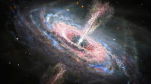

El universo está compuesto por una gran variedad de objetos astronómicos,es decir, cuerpos naturales que existen en el espacio exterior. Estos abarcan desde los más cercanos a la Tierra, como la Luna y los planetas del Sistema Solar, hasta las gigantescas galaxias que se encuentran a miles de millones de años luz de distancia.
